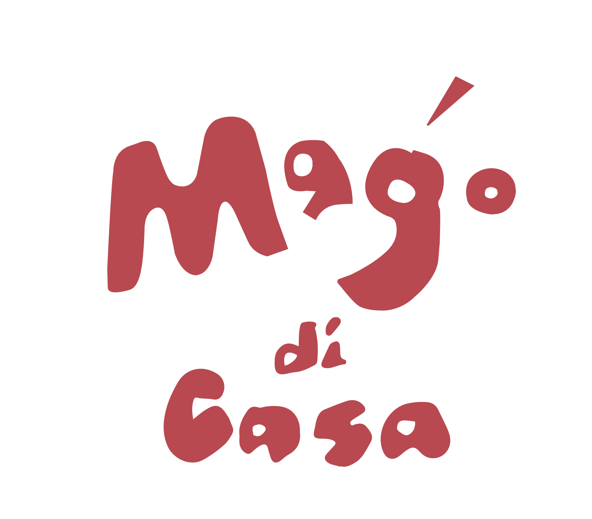
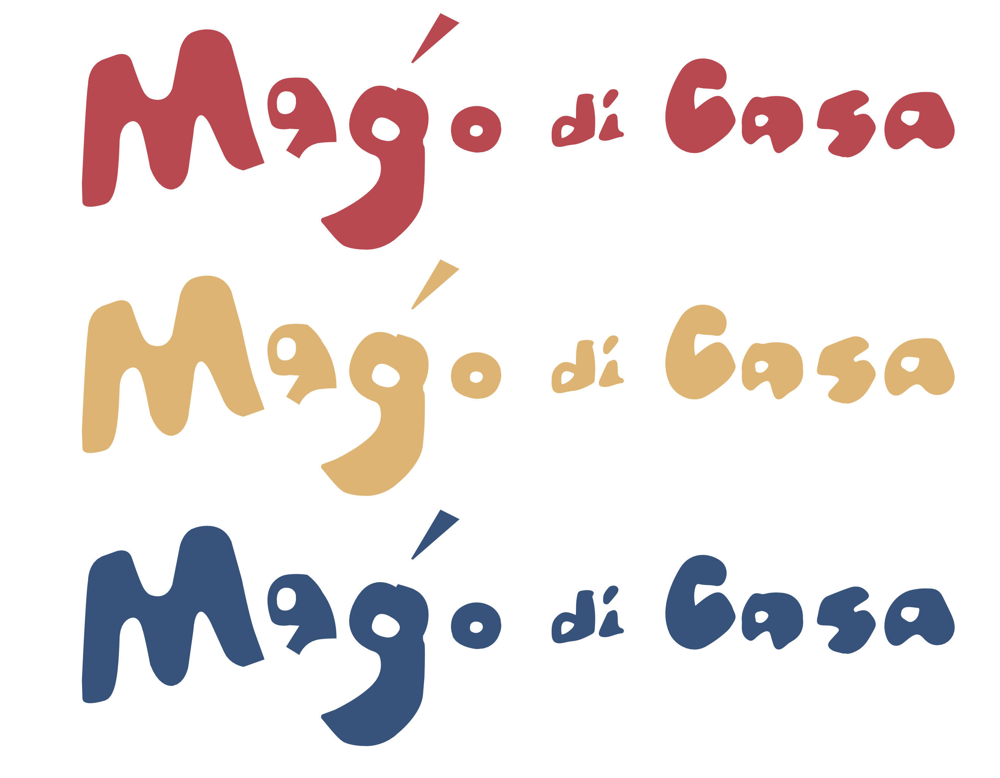

Project / Branding
리빙브랜드 마고디까사 브랜드 아이덴티티 디자인
Brand Identity Design for the Living Brand ‘Mago di Casa’


방수 러그를 주력 제품으로 하는 신규 리빙 브랜드를 위해 네이밍부터 로고, 폰트 시스템, 컬러 코드까지 브랜드 아이덴티티 전반을 설계한 프로젝트다.
This project developed the full brand identity for a new living brand centered on waterproof rugs, spanning naming, logo design, type system, and color codes.
프로젝트 개요
본 프로젝트는 워터프루프 방수 러그를 주력 제품으로 하는 신규 리빙 브랜드를 위해, 브랜드 네이밍 기획과 로고 디자인을 포함한 아이덴티티 시스템을 개발하는 것을 목표로 진행되었다. 브랜드의 핵심 슬로건은 "작은 변화로 나의 생활 공간을 아늑하고 풍요롭게"로 설정되었으며, 이를 바탕으로 편안함, 따뜻함, 친환경성을 중심 가치로 정리했다.
브랜드명은 이탈리아어로 '집의 마법사'를 의미하는 Mago di Casa로 결정되었다. 이름이 지닌 유희성과 생활 밀착적 감성을 시각적으로 풀어내기 위해, 부드럽고 유기적인 형태의 워드마크를 중심으로 브랜드 톤을 구성했다. 친근하면서도 감각적인 인상을 주는 것이 핵심 방향이었다.
디자인 산출물은 로고, 폰트 시스템, 컬러 코드뿐 아니라 명함과 같은 실물 적용 규격까지 포함했다. 이를 통해 디지털과 인쇄물 환경 모두에서 일관된 브랜드 경험을 구현할 수 있는 기본 체계를 정리했고, 신생 리빙 브랜드가 시장에 진입할 때 필요한 첫 인상을 안정적으로 구축할 수 있도록 했다.
This project was carried out to develop the identity system of a new living brand focused on waterproof rugs, including naming strategy and logo design. The core slogan, "Make your living space cozy and enriching with small changes," framed the brand around comfort, warmth, and eco-friendliness.
The final brand name, Mago di Casa, meaning "master of the home" in Italian, became the basis for a visual identity that feels both playful and domestic. The wordmark was developed with soft, organic forms to communicate familiarity and warmth while maintaining a refined design sensibility.
The final deliverables included the logo, font system, and color codes, along with concrete applications such as business card specifications. This established a consistent brand foundation across print and digital touchpoints and helped shape a clear market entry identity for the new living brand.
State. 완료 Completed
Role. 기획 Planning, 디자인 Design
Client. 더코스트 The Coast